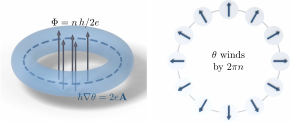
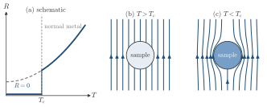

Page 2 of 16 of this session
5.2 Superconductivity as a macroscopic quantum phenomenon
How can a measurement on a sample of many atoms give the ratio \(h/2e\) of two microscopic constants? We will now see that the answer is a phase that is the same for the whole condensate, and that it makes the flux through a superconducting ring come in steps of \(h/2e\). In the second part of the page we see zero resistance and the Meissner effect, which are two signatures of the same condensate.
\[\Delta = \langle c_i c_j\rangle. \tag{1.9}\]
This is the pair amplitude of Section 1.15, the expectation value of two annihilation operators, which is nonzero in a superconductor. Its phase is the phase \(\theta\) of the condensate that we use on this page, up to a constant.
Before we write the Hamiltonian, let us see why superconductivity is one of the clearest ways that we have to observe quantum mechanics at the macroscopic scale. A superconductor is made of trillions of atoms, and still a measurement on the bulk sample can give, with a very high precision, the microscopic constants \(\hbar\) and \(e\). This works because gauge symmetry breaking gives the many-body wave function a single well-defined phase \(\theta(\mathbf{r})\), and the condition that this phase is single-valued around a closed loop is a very strong constraint.
Let us take a superconducting ring threaded by magnetic flux, or in the same way a hole in a bulk superconductor. We take the loop deep enough inside the superconductor that the supercurrent density vanishes there because of Meissner screening. The supercurrent of Cooper pairs, which have charge \(2e\) since a pair is made of two electrons, is proportional to the gauge-invariant combination \(\hbar\nabla\theta - 2e\mathbf{A}\). If we set the current to zero on our loop, we obtain
\[\oint \nabla\theta \cdot d\boldsymbol\ell = \frac{2e}{\hbar}\oint \mathbf{A}\cdot d\boldsymbol\ell = \frac{2e}{\hbar}\Phi.\]
However, \(\theta\) is the phase of a single-valued wave function, so after one turn around the loop it can only change by an integer multiple of \(2\pi\), which means that \(\oint \nabla\theta\cdot d\boldsymbol\ell = 2\pi n\) for integer \(n\). If we combine the two equations, we obtain flux quantization.
The flux through a hole in a superconductor, enclosed by a loop where the supercurrent vanishes, is quantized,
\[\Phi = n\,\Phi_0, \qquad \Phi_0 = \frac{h}{2e}. \tag{5.1}\]
The \(2\) is the charge \(2e\) of a Cooper pair, and no parameter of the material enters, so every superconductor gives the same flux quantum \(\Phi_0\).
The steps From the phase of the condensate to flux quantization
Let us take the simplest case first. The ring has a wall that is narrow compared with its radius \(R\), but much thicker than the penetration depth of the field. A circle of radius \(R\) inside the wall is then a loop where the current vanishes. We write \(\psi=|\psi|e^{i\theta}\) for the wave function of the condensate, with carriers of charge \(q\) and mass \(m\). Its current density is
\[\mathbf j=\frac{q|\psi|^2}{m}\left(\hbar\nabla\theta-q\mathbf A\right),\]
which is the current of quantum mechanics in a vector potential, and for a pair \(q=2e\). By symmetry the vector potential on the circle points along the circle and has the same size \(A_\varphi\) everywhere, with \(\varphi\) the angle along the circle. Since \(\oint\mathbf A\cdot d\boldsymbol\ell=2\pi R\,A_\varphi\) is the flux \(\Phi\), we have \(A_\varphi=\Phi/2\pi R\). The gradient of the phase along the circle is \((1/R)\,d\theta/d\varphi\), so \(\mathbf j=0\) gives
\[\frac{\hbar}{R}\,\frac{d\theta}{d\varphi}=\frac{q\Phi}{2\pi R}, \qquad \text{meaning that} \qquad \frac{d\theta}{d\varphi}=\frac{q\Phi}{h}.\]
After one turn the phase has changed by \(2\pi q\Phi/h\). The wave function is single valued, so this change is \(2\pi n\), and \(\Phi=nh/q=nh/2e\), which is (5.1).
For a loop of any shape the same steps hold with Stokes’ theorem, \(\oint\mathbf A\cdot d\boldsymbol\ell=\int(\nabla\times\mathbf A)\cdot d\mathbf S=\Phi\), so \(\mathbf j=0\) on the loop gives \(\oint\nabla\theta\cdot d\boldsymbol\ell=(q/\hbar)\Phi=2\pi n\). The charge of a pair of electrons is in fact \(-2e\), and the sign of \(q\) only changes the sign of \(n\), so the set of allowed fluxes is the same. When the wall is thinner than the penetration depth, the current does not vanish on any loop, and the flux alone is not quantized.
Figure 5.1 shows the geometry and the argument based on the winding of the phase. The same physics is behind the precision of Josephson junctions. In the AC Josephson effect, a voltage \(V\) across the junction gives a current that oscillates with frequency \(2eV/h\), which is a direct macroscopic readout of \(h/2e\). This is possible only because gauge symmetry is broken.
Note the parallel with the quantum Hall state of Session 4. There, a macroscopic measurement also gives a ratio of the same two constants, which is the Hall conductance, quantized in units of \(e^2/h\) by the Chern number of equation (3.4). However, the mechanism is completely different, since it is the quantization of a single-particle topological invariant and not the breaking of a continuous symmetry. In fact, if we combine the two measurements, the flux quantum and the conductance quantum of the Hall effect, we have one of the most precise ways to obtain \(h\) and \(e\) separately. This is a concrete example of the emergence that we keep coming back to in this course, where macroscopic measurements on billions of atoms give us exact microscopic constants.

In the ac Josephson effect a dc voltage \(V\) across a junction between two superconductors gives a current that oscillates at a frequency \(f\) proportional to \(V\), with \(f/V=2e/h\). A measurement of a frequency and of a voltage then gives the ratio \(2e/h\), which is the inverse of the flux quantum of (5.1). With this method this article determined \(2e/h=483.5912\pm0.0030\) MHz/μV. The abstract names no material. In our reading, no parameter of a material enters this ratio. Our own conversion of this value is \(h/2e=2.068\times10^{-15}\) Wb.
Deep inside a superconducting ring, carriers of charge \(q\) have a phase \(\theta\) with
\[\oint\nabla\theta\cdot d\boldsymbol\ell=\frac{q}{\hbar}\,\Phi=2\pi n.\]
Here \(\Phi\) is the flux through the ring and \(n\) is an integer. Experiments find steps of \(h/2e\) in \(\Phi\). Which step would single electrons of charge \(e\) give?
Show the answers
- A. ✗ False
This is false. The condition gives \(\Phi=nh/q\), so the step depends on the charge. For \(q=e\) we get \(h/e=4.1\times10^{-15}\) Wb, which is twice \(h/2e=2.07\times10^{-15}\) Wb.
- B. ✓ True
This is true. The condition gives the step \(h/q\), and for \(q=e\) this is \(h/e\). So the measured step \(h/2e\) shows that the carriers have charge \(2e\).
- C. ✗ False
This is false. A step \(h/4e\) needs the charge \(q=4e\). A single electron has charge \(e\), and a charge \(e/2\) would give the larger step \(2h/e\), so this choice goes in the wrong direction.
A dc voltage \(V\) across a Josephson junction gives a current that oscillates in time. At which frequency \(f\) does it oscillate?
Show the answers
- A. ✓ True
This is true. A pair that crosses the junction gains the energy \(2eV\), so the phase difference across the junction grows at the rate \(2eV/\hbar\), and the frequency is \(2eV/h\). For \(V=1\) μV this is \(483.6\) MHz, so a frequency and a voltage give the ratio \(2e/h\).
- B. ✗ False
This is false. This is the frequency of carriers of charge \(e\). For \(V=1\) μV it gives \(241.8\) MHz, which is half of the \(483.6\) MHz that pairs give.
- C. ✗ False
This is false. This frequency would need carriers of charge \(e/2\). For \(V=1\) μV it gives \(120.9\) MHz, which is a quarter of the \(483.6\) MHz that pairs give.
A superconducting ring has a hole of radius \(r=1\) μm. Which uniform magnetic field \(B\) through the hole gives one flux quantum \(\Phi_0=h/2e\)?
Solution
One flux quantum is \(\Phi_0=h/2e=2.068\times10^{-15}\) Wb. The area of the hole is \(\pi r^2=3.142\times10^{-12}\) m\(^2\), so
\[B=\frac{\Phi_0}{\pi r^2}=\frac{2.068\times10^{-15}\ \text{Wb}}{3.142\times10^{-12}\ \text{m}^2}=6.58\times10^{-4}\ \text{T}=0.658\ \text{mT}.\]
A SQUID is a superconducting ring of this kind with two Josephson junctions, and its critical current is periodic in the flux through the ring, with the period \(\Phi_0\). For this ring one period is a change of the field of \(0.658\) mT. A ring of radius \(10\) μm has a period \(100\) times smaller, \(6.58\) μT, since the area grows as \(r^2\). This is why a SQUID can count single flux quanta, and why a large ring measures small fields.
5.3 Zero resistance and the Meissner effect in a superconductor
In the history of the field, superconductivity was discovered through its transport signature. When we cool an ordinary metal, the resistivity goes down smoothly, because there are fewer phonons from which the electrons can scatter. A superconductor instead shows a sudden drop of the resistance to exactly zero at a critical temperature \(T_c\). Below \(T_c\) the resistance stays zero, and not only small. \(T_c\) is the temperature at which gauge symmetry breaking starts. There is no notebook cell for these signatures, since the companion notebook starts from the Hamiltonian and not from transport measurements.
The second signature is the Meissner effect. Above \(T_c\) a metal allows an external magnetic field inside without any problem, but below \(T_c\) the superconductor actively expels the field from its bulk. In type-II superconductors, the only field that remains inside the material is confined to quantized vortices, which are dynamical topological defects of the order parameter of the broken gauge symmetry. Both signatures, zero resistance and the expulsion of the flux, come from the same event. This is the condensation of Cooper pairs into a single macroscopic quantum state, with a rigid phase that is chosen spontaneously. Schematic 5.2 shows both signatures. The resistance drops to zero at \(T_c\), and below \(T_c\) the field lines bend around the sample and do not cross it.

A sphere sits in a magnetic field along \(z\). In each picture the lines are the field lines, and the circle is the sphere. The sphere is a type-II superconductor below \(T_c\). The field is between its lower and its upper critical field. Which picture shows it?
Show the answers
- A. ✗ False
This is false. Here the field crosses the sample unchanged, as in a normal metal. A type-II superconductor is in this state only above its upper critical field, or above \(T_c\).
- B. ✗ False
This is false. Here the field is zero inside, which is the Meissner state. A type-II superconductor is in this state only at low fields. For a sphere the field at the equator is \(1.5\) times the applied field, so vortices start to enter at \(2/3\) of the lower critical field.
- C. ✓ True
This is true. Between the two critical fields the field enters, but only in thin tubes, which are the quantized vortices. Each vortex holds one flux quantum \(h/2e\), and between the vortices the field is still expelled.
- In Section 5.7 we see why the phase of the pair amplitude changes by \(2\varphi\) under a gauge transformation, which is the origin of the charge \(2e\) in (5.1).
- In Section 8.10 the emergent gauge field of a quantum spin liquid has its own topological defects, the visons, in analogy with the vortices of the superconducting phase.